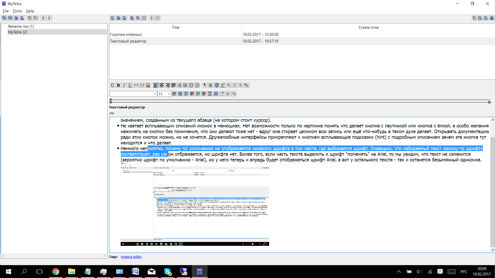

- Должна быть возможность создать пустую заметку и дальше продолжить её заполнение, так как меню редактирования записи больше и удобней, чем меню создания заметки. Нет смысла в ограничении, что нельзя создать заметку (note в интерфейсе) без текста.
- Не должно быть требования на наличие выделения при создании маркированного списка. Если выделения нет, то маркированный список должен создаваться с одним значением, созданным из текущего абзаца (на котором стоит курсор).
- Не хватает всплывающих описаний иконок в менюшках. Нет возможности только по картинке понять что делает кнопка с паутинкой или кнопка с ёлкой, а особо желания нажимать на кнопки без понимания, что они делают тоже нет - вдруг она стирает целиком всю запись или ещё что-нибудь в таком духе делает. Открывать документацию ради этих кнопок можно, но не хочется. Дружелюбные интерфейсы прикрепляют к кнопкам всплывающие подсказки (hint) с подробным описанием зачем эта кнопка тут находится и что делает.
- Немного непонятно, почему по умолчанию не отображается никакого шрифта в том месте, где выбирается шрифт. Очевидно, что набираемый текст какому-то шрифту соответствует, раз уж он отображается, но шрифта нет. Более того, если часть текста выделить и шрифт "поменять" на Arial, то мы увидим, что текст не изменится (вероятно шрифт по умолчанию - Arial), но у него теперь и впредь будет отображаться шрифт Arial, а вот у остального текста - так и останется безымянный одиночка.

- Редактирование изображений СУПЕР СЛОЖНОЕ.
- Во первых, если я всё понял верно, единственное, что можно сделать с изображением это изменить его размер. Как мне кажется минимальные требования для такого функционала это кадрирование, ручка, подсветка и ластик. Можно взять за основу стандартный (хоть и не для всех поставок) Snipping Tool в винде. Супер удобно для каждодневной работы, когда надо подстветить кому-то деталь того, что происходит на твоём экране. В Snipping Tool кадрирование можно сказать есть из коробки - само снятие картинки идёт с кадрированием, а дальше до минимального набора дополняют подсветка, ручка, ластик. Вот это вот то, что очень важно, когда прилагается та или иная картинка, поясняющая слова в заметке. То есть на практике чтобы это сделать, приходится делать тот же snipping tool или доставать paint, а это долго и ненужно.
- Во вторых, это уже к сложности. Совсем неочевидно и весьма неудобно поведение контекстного меню. Когда пользователь нажимает правой кнопкой мыши (стандарт при вызове контекстного окна) на картинке, он ожидает, что "Edit image properties" относится именно к той самой картинке, на которую он нажимал. Но на самом деле при этом станут изменятся свойства.. картинки, которая непосредственно перед курсором ввода (который к клавиатуре относится, а не к мыши)! Это крайне неочевидно и дико неудобно. По сути это означает, что чтобы редактировать свойства картинки на неё надо нажать дважды - сначала левой кнопкой (курсор появляется в нужном месте) и теперь правой. При этом, да, нельзя забывать, что контекстное меню также может вызываться и по кнопке с клавиатуры. Думаю было бы логичным, если бы нажатие правой кнопки мыши по изображению приводило к перестановке курсорса клавиатуры в нужное место(сразу за картинкой), а только потом к появлению контекстного меню... Тогда на вызов контекстного меню с клавиатуры это бы не повлияло.
- Непонятно как делать и можно ли вообще делать вложенные маркированные списки. Обычно в текстовых редакторах нажатие Tab приводит к переводу на следующий уровень вложенности, тут же при этом только появляется табуляция. В меню я увидел специальную кнопку, которая похоже двигает отсуп у элемента списка, вот по Tab на элементе списка должно происходить что-то такое же, только немного подальше и должен меняться маркер...
- Подстветка ошибок
- Вставка форматированного текста должна иметь возможность делать вставку, игнорируя форматирование (применяя то, которое уже в заметке используется).